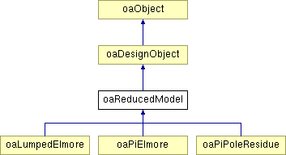

oaReducedModel Class Reference
Inheritance diagram for oaReducedModel:

Detailed Description
The oaReducedModel class is an abstract base for all reduced model objects that model the parasitics seen by a driver of a net.
ReducedModels are used as simplified representations of the electrical behavior of a net in order to be smaller and faster for delay calculation than a full detailed parasitic model. Reduced models are associated with a Terminal or InstTerm on a net to represent the behavior of the Net when that Terminal or InstTerm is driving it.
ReducedModels may be created in the block and the occurrence domains. Those created in a hierarchical fashion with be stored on oaTerms and oaInstTerms. Those created for an expanded hierarchy will be stored on oaOccTerms and oaOccInstTerms.
See oaParasiticNetwork for the representation of detailed parasitic networks.
Note: Any change to the connectivity of the net that the oaReducedModel is on will cause the oaReducedModel to be destroyed. This includes creating, destroying, or moving Terminals or InstTerms.
The oaReducedModel class can be observed by deriving from oaObserver<oaReducedModel>.
Member Function Documentation
| void oaReducedModel::destroy |
( |
oaDesign * |
design |
) |
[static] |
|
|
|
This function destroys all reduced models in the specified design. |
|
|
This function destroys all reduced models that represent parasitics for the specified analysis point. |
| void oaReducedModel::destroy |
( |
|
) |
|
|
|
|
This function destroys this reduced model object. |
|
|
This function returns the analysis point that this reduced model represents. |
| oaDomain oaReducedModel::getDomain |
( |
|
) |
const |
|
|
|
This function returns the domain for this reduced model, which is the same as the domain of the driver and receivers on this reduced model.
Reimplemented from oaObject. |
|
|
This function returns the driver for this reduced model, which is a terminal or an instTerm. If the model is for an oaNet, then the driver will either be an oaTerm or an oaInstTerm. If the model is for an oaOccNet then the driver will either be an oaOccTerm or an oaOccInstTerm. |
Member Enumeration Documentation
The documentation for this class was generated from the following files:
Return to top of page
Copyright © 2002 - 2010 Cadence Design Systems, Inc.
All Rights Reserved.